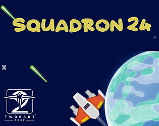
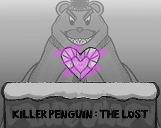
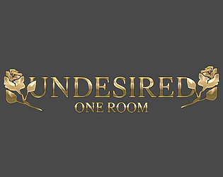
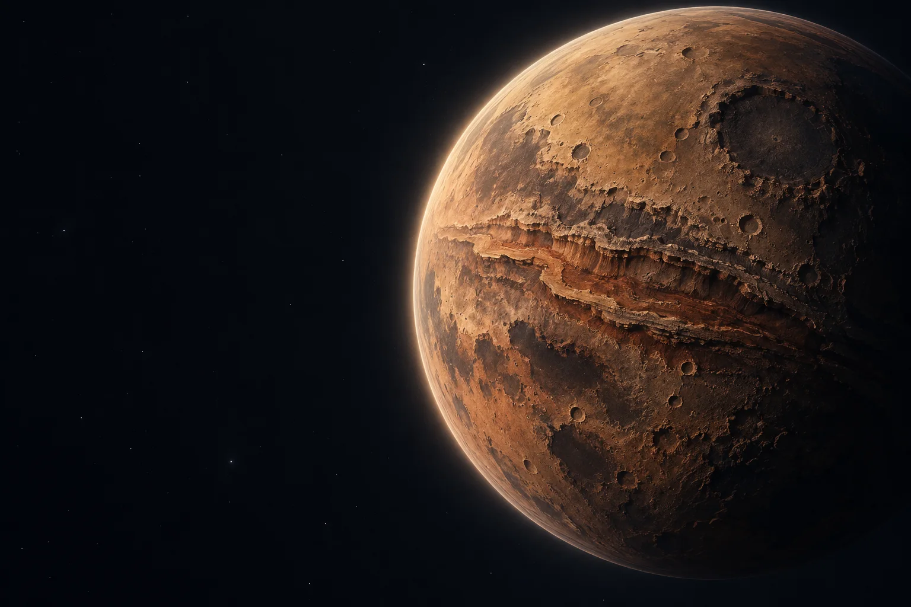
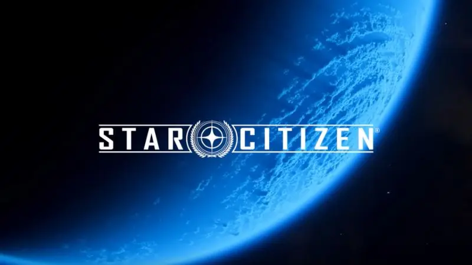
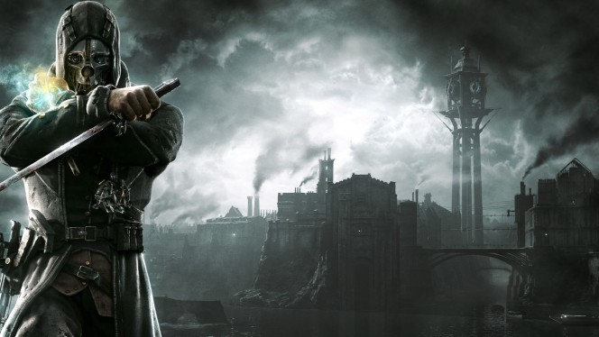
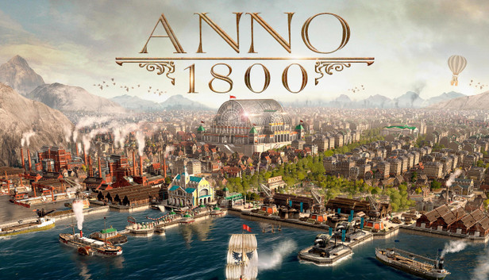

C++ / SFML
Solnish — GStudio
Un jeu 2D et son moteur personnalisé, avec une responsabilité de lead sur le projet.
Jeu 2D · Projet collectif
Lead Programmer
THIBAUT PATRY
Jeune et motivé, j'ai toujours été passionné par l'informatique et les sciences. Je me spécialise dans la création de jeux vidéo pour avoir la possibilité de donner vie à des univers uniques !
Voir mes projets01 / PROJETS
C++, Unity, réseau et programmation graphique.
Un jeu 2D et son moteur personnalisé, avec une responsabilité de lead sur le projet.
Jeu 2D · Projet collectif
Lead Programmer
Un projet multijoueur Unity : fonctionnalités réseau, interface, audio et retours de jeu.
Unity · Multijoueur
Développement en équipe
Des systèmes de combat en C++ intégrés dans un moteur DirectX 12.
C++ · Gameplay & moteur
Programmation gameplay
 C++ / Client / serveur
C++ / Client / serveurUne arène spatiale rétro en multijoueur, avec un serveur Linux déployable sur VPS.
C++ · Réseau
Développement en équipe
 C++ / DirectX 12
C++ / DirectX 12Un moteur de rendu en C++/DirectX 12, créé pendant mes cours.
C++ · Programmation graphique
Contribution au moteur

Un shoot’em up de science-fiction en C++, disponible sur Windows.
Shoot’em up · Projet scolaire
Projet scolaire
Simulation, gameplay et intégration.

Mr. Plop, un pingouin, part retrouver ce qu’il a perdu dans une aventure sur la glace.
Plateforme · Game jam
Projet en équipe

Une aventure psychologique à la première personne, créée pendant une jam de 36 heures.
Aventure · Game jam
Équipe de trois

Livrer les colis le plus vite possible, en évitant les obstacles sur la route.
Course & livraison · Game jam
Développement en équipe
 Unity / C#
Unity / C#Une game jam Unity, du GameManager aux événements et à l’intégration visuelle.
Unity · Game jam
Développement en équipe

Unity / C#Un sandbox balistique : impacts, pénétration d’armure et dégâts internes.
Unity · Simulation
Projet personnel
02 / À PROPOS
Développement & jeu vidéo
J’étudie le développement informatique, option jeu vidéo, au Gaming Campus à Lyon. Je m’intéresse particulièrement aux jeux orientés systèmes, à la simulation et au gameplay émergent.
Je travaille sur des projets scolaires, personnels et en game jam. Vous pouvez retrouver mes jeux sur itch.io et mes dépôts sur GitHub.

SIMULATIONLa simulation et les systèmes interconnectés.

GAMEPLAYLe level design et les interactions entre les mécaniques de jeu.

GESTIONLa gestion, l’interdépendance des ressources et l’optimisation.
CONTACT
Mes jeux et mon code.